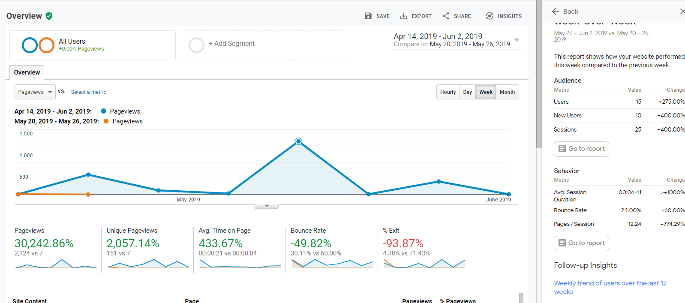

Over the past three months I have participate in both formal and informal learning opportunities to deepen my knowledge of User Experience. Formal learning opportunities including completing online courses for user experiences in an academic setting and developing a blog. My informal learning opportunities occurring through meetups across the area of Seattle, independent learning, reading and additional online courses.
a critical aspect of user experience is the development of a website and content to increase services, products, or engagement of users in a website. Google analytics allows website owners to track client engagement with marketing materials, product sales, videos plays, and so much more. Businesses can use google analytics data, goals, and other categories of data analysis to create website content to reach their desired results. Website goals can be achieved and measures through a variety of analytics tools such as goal setting and optimization or effective use of captivating content.
Setting Goals
Google analytics allows website owners to goals in four categories- Destination, Page views, Event, and Page/Screen- owners can set goals based on business objectives owners can then use optimization to track specific pages to measure goal effectiveness.
During Optimization, website owners can select variants, items to test, and targeting pages to test variants, and identify website functionality to optimize. The optimization goals for the User Experience Journal included duration goals, media play and session duration. The goals were selected based on previously collected data for a longitude comparison. Media content was added to the User Experience Journal as an additional method of learning for potential clients and was set as a media event. Media as a visual learning tool used to improve the overall user experience had the potential to increase session duration.
Image for Variants and TargetsMethods: Goal Implementation, Tracking, and Funneling
Goal implementation process included identifying a goal to implement in the conversion, administrative and goal setting tools. The Event goal was set by identifying Event category as a goal, media play, and setting a category and action for Media. The engagement and session duration and engagement goals were set by identifying the goal type and the amount of time the user experience journal would engage users and adding the optimization script tag to the user experience journal page for measurement.
Three strategies for funneling users to the experience jounal included emailing a direct request to students from the formal earning setting. Posting the User experience journal online and posting a link to the user experience journal on a slack channel of users participating in an academic setting.
The implementation included changing two of the previousu videos on the index page from previously viewed videos from the formal education setting to new content about a similar subject. The two updated videos related to exploring careers in UX, becoming a user researcher and how to get hired without a portfolio. The video topics were selected based on the methods used to funnel users to the website, the direct emails and slack posting have an audience of clients in the process of completing a credential with a UX learning requirement.
Session Engagement Data across Three MonthsResults: Goals and User experience Journal
The results of the goal setting experiment concluded with the engagement and session duration goal having the strongest rate of conversion 3.57% percent, with the event goal at a zero converson rate.
My hypothesis for the conversion rate of session duration being the strongest outcome includes the review of previous assignments and additions to the index page.
Image for Goal Funneling DataThe funneling process for all the goals were held constant, however the results of the funneing process impacted the session duration goal the greatest.
 Image for User Journal Overview DataThe overall engagement of the user journal engagement journal improved over the three month process, the greatest increase in users occuring in the month of may with a new 25 users viewing the user experience journal causing a spike in data. This outcome is hypothesized to occur based on the direct email request to view content, the update in index page content and review of previous assignments having the strongest page views